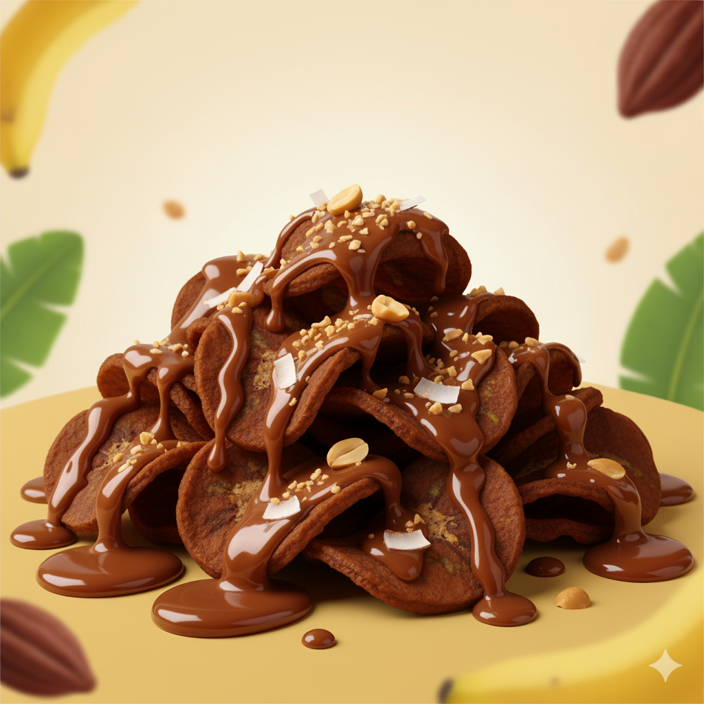

Keripik Pisang Kelezatan Tanpa Batas.
Renyah, gurih, dan penuh rasa! Kami hadirkan keripik pisang dengan resep warisan yang tak terlupakan.

Renyah, gurih, dan penuh rasa! Kami hadirkan keripik pisang dengan resep warisan yang tak terlupakan.
4 Varian Terbaik Wajib Coba
Mengapa Keripik Kami Beda?
Diiris super tipis dan digoreng dengan metode vakum modern untuk kerenyahan yang garing di setiap gigitan.
Hanya menggunakan pisang Tanduk atau Kepok kualitas premium, langsung dari kebun petani lokal Indonesia.
Dikemas dengan standar kualitas tinggi, menjamin keripik tetap renyah dan segar saat sampai di tangan Anda.
"Keripik ini bukan hanya enak, tapi bikin nagih total! Rasa Balado Pedasnya pecah di mulut. Selalu jadi camilan andalan saat kerja."
– Rina A., Jakarta (Pengusaha Muda)